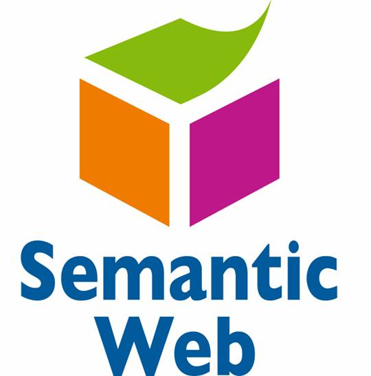

Troviamo sempre l' informazione che ci serve?
-
Utente
-
- Posso comprare la benzina per il
tagliaerba portando una bottiglia da
riempire?
- Il mixer del robot da cucina
LoChefPerfetto non funziona
-
Il CRM
-
- È vietato cedere a terzi
carburanti in recipienti non a
norma
- Il miscelatore del Mod.
CR/XXX32-123 può presentare degli
inconvenienti al sistema di accensione e
regolazione della velocità
Information Retrieval: modello funzionale
- Individua la corrispondenza tra l' insieme
delle domande e l' insieme dei documenti
- Utilizza un linguaggio intermedio, detto
linguaggio di indicizzazione o linguaggio di
classificazione
- Il processo:
- analisi e indicizzazione dei documenti
- analisi e formalizzazione delle domande degli
utenti
- determinazione della somiglianza tra
rappresentazione della domanda e rappresentazione del
documento
- reperimento e restituzione dei documenti
- Indicizzazione
- normalmente estrazione di tutte le parole, tranne
le più comuni
- processo essenzialmene sintattico
- problemi derivanti da sinonimie, polisemie,
iperonimie, iponimie
- Lo spazio vettoriale dei documenti
Tutti e solo i documenti interessanti?
Information Retrieval: efficacia
-
P (Precisione o Precision)
-
-
rapporto (numero compreso tra 0 e 1) tra
il numero di documenti reperiti e
pertinenti e il numero di documenti
reperiti
- esperienza comune ("effetto
rumore")
-
R (Richiamo o Recall)
-
-
rapporto (numero compreso tra 0 e 1) tra
il numero di documenti reperiti e
pertinenti e il numero di documenti
pertinenti esistenti
- effetto spesso non percepito ("effetto
silenzio") e difficile da
individuare
-
Cause di una bassa efficacia
-
-
non difetti del sistema
- caratteristiche del processo di
indicizzazione (scelta di un "buon" termine
indice)
- l' utente cerca concetti, non parole
(approccio semantico, non
sintattico)
Per una maggiore efficacia …
-
Scelta dei termini indice
-
- non troppo specifici (frequenza bassa)
- non troppo generici (frequenza alta)
-
trasformazione di frase (da alta a bassa
frequenza)
-
trasformazione di thesaurus(da bassa ad
alta)
-
Base di conoscenza
-
- di adeguato livello di
complessità
- deve essere condivisa tra indicizzatore
e utente
- con una rappresentazione formale
Ricerca di informazioni sul Web
-
Approccio attuale
-
- basato sul term matching
-
ranking (tf/idf o Google PageRank)
- approccio sintattico
-
Semantic Search
-
-
applicazione del Semantic Web alla ricerca
di informazioni
- gli utenti preferiscono formulare query
utilizzando concetti semantici ad alto
livello, più coerenti con la conoscenza
tacita
-
navigational search: restituzione di
documenti che contengono i termini
specificati dall' utente
-
research search: restituzione dell'
insieme di documenti che nel loro complesso
sono in grado di fornire l' informazione
desiderata
Semantic Search e ontologie
- Migliori risultati grazie alla
disponibilità di conoscenza strutturata
comprensibile dalla macchina (machine
understandable)
- Migliore definizione dei concetti da
ricercare
-
Arricchimento della lista dei risultati
-
Comprensione del testo
- Utilizza ontologie di supporto
- Modellazione ontologica degli interessi dell'
utente
Cos'è un' ontologia?
Jim Hendler
A set of knowledge terms, including the
vocabulary, the semantic interconnections and
some simple rules of inference and logic for
some particular topic
Studer et al. (1998)
An ontology is a formal, explicit specification of a
shared conceptualisation.
A 'conceptualisation' refers to an abstract
model of some phenomenon in the world by having
identified the relevant concepts of that
phenomenon.
'Explicit' means that the type of concepts
used, and the constraints on their use are explicitly
defined. For example, in medical domains, the concepts
are diseases and symptoms, the relations between them
are causal and a constraint is that a disease cannot
cause itself.
'Formal' refers to the fact that the ontology
should be machine readable, which excludes natural
language.
'Shared' reflects the notion that an ontology
captures consensual knowledge, that is, it is not
private to some individual, but accepted by a group.
Disaccordo o accordo?
- Definizioni diverse, ma accordo sul
concetto
- Un' ontologia include non solo i termini che sono
esplicitamente definiti in essa, ma anche la
conoscenza che ne può essere
derivata mediante un processo di
inferenza
- Un' ontologia cattura conoscenza consensuale
- Le ontologie possono essere: molto
informali, semi-informali,
semi-formali, rigorosamente formali
-
Vocabolari e thesauri nella parte
bassa delle ontologie informali
- Ontologie semi-formali utili per information
integration
- Ontologie semi-formali meno costose e
più diffuse (informazione parziale e non
completamente coerente)
- "Little semantics goes a long way" (Jim
Hendler)
Dal Web al Web Semantico

Perché puntare sul semantic web?
Le previsioni Gartner nel 2007
By 2017, we expect the vision of the Semantic Web
[…] to coalesce […] and the majority of
Web pages are decorated with some form of semantic
hypertext.
By 2012, 80% of public Web sites will use some level of
semantic hypertext to create SW documents […]
15% of public Web sites will use more extensive
Semantic Web-based ontologies to create semantic
databases
(nota: “semantic hypertext” si riferisce a
strumenti e tecnologie come RDFa, microformat
eventualmente con GRDDL, etc.)
Source: “Finding and Exploiting Value in
Semantic Web Technologies on the Web”, Gartner
Research Report, May 2007
L' integrazione dei dati

Per un processo automatico
- Occorre combinare dataset diversi
- ognuno di essi può provenire da un
qualunque sito web
- possono avere originariamente formati
differenti (MySQL, fogli excel, XHTML, etc)
- possono avere nomi diversi per le
relazioni (multilinguismo)
- È necessario rappresentare in modo formale
la conoscenza
-
Il Semantic Web fornisce le tecnologie per rendere
possibile questa integrazione
L' architettura del Semantic Web

-
Il Semantic Web ...
-
- è un' infrastruttura basata su metadati
per poter svolgere ragionamenti sul Web
-
estende, non sostituisce il web attuale
-
I metadati sono:
-
- Informazioni, elaborabili automaticamente
(machine understandable), relative a una
risorsa web o a qualche altra cosa
- ... data about data
- ... informazioni che possono essere utilizzate da
intelligent software agents per fare un uso
appropriato delle risorse
- ... dati ...
- ... che possono essere descritti da altri
metadati ...
Perché i metadati?
- Nel Web di oggi tutte le informazioni sono "
machine readable"
- Nel Semantic Web le informazioni devono essere "
machine understandable". Quindi occorrono:
-
nomi non ambigui per le risorse (URI)
- un data model condiviso per esprimere i
metadati (RDF)
- un modo per accedere ai metadati sul Web
-
vocabolari condivisi (ontologie)
Elementi di RDF
Cosa è RDF?
-
Resource Description Framework
- strumento base per codifica,
scambio e riutilizzo di metadati
strutturati
- consente l' interoperabilità tra
applicazioni che si scambiano sul Web informazioni
machine-understandable
- un modello generale basato su triple, dette
"triplets", o "statement" (con un
formato machine readable come RDF/XML, Turtle, n3, RXR)
RDF è per il Semantic Web ciò che HTML
è stato per il web
Triple RDF
- Una tripla RDF
(s,p,o) è definita
in modo che:
- Le risorse s, p, o vengono anche dette
"subject", "predicate",
"object", o "subject",
"property", "object"
- Le risorse possono usare un qualunque URI;
per esempio, possono denotare un elemento
interno a un file XML sul Web, non solo una
risorsa "completa".
- Le triple RDF formano un grafo orientato
etichettato, o "directed, labelled graph"
(è questo il modo migliore per considerarle!)
Un esempio semplice di RDF (in RDF/XML)
<rdf:Description rdf:about="http://…/isbn/2020386682">
<f:titre xml:lang="fr">Le palais des mirroirs</f:titre>
<f:original rdf:resource="http://…/isbn/000651409X"/>
</rdf:Description>
(Nota: per semplificare gli URI sono stati usati i
namespace)
Merging dei dati…

Il Semantic Web: la visione del W3C
-
Ipotesi e sfide
-
- il Web è intrinsecamente
distribuito
- le macchine possono accedere ad un insieme
strutturato di informazioni e a un insieme di
regole di inferenza da utilizzare per il
ragionamento automatico
- per ragionare sui dati occorrono le
ontologie
- fornire un linguaggio per esprimere dati
e regole per ragionare sui dati
-
esportare sul web delle regole da
qualunque sistema di rappresentazione della
conoscenza
-
Metadati
-
- informazioni, comprensibili dalla
macchina, relative a una risorsa web o a qualche
altra cosa
Il Semantic Web: le tecnologie W3C
-
Resource Description Framework (RDF)
-
- strumento base per la codifica, lo
scambio e il riutilizzo di metadati
strutturati
- consente l'interoperabilità tra
applicazioni che si scambiano sul web informazioni
machine-understandable
-
Web Ontology Language (OWL)
-
- linguaggio per descrivere
proprietà, vincoli, cardinalità, etc.
- permette di esportare ontologie in modo
interoperabile
Il Semantic Web non è solo ricerca!
Dublin Core Metadata Initiative
- Uno dei primi vocabolari in RDF per metadati
- Costituisce la base per i vocabolari per le
Digital Libraries distribuite
-
Dublin Core Metadata Element Set
-
15 categorie generali (elements) per
creare descrizioni semplici e facilmente
comprensibili per la maggior parte delle risorse
informative.
- DCMES è solo elemento semantico di
base per i metadati sul Web
- le singole comunità hanno spesso bisogno
di una semantica più ricca
- altri metadati possono essere combinati
con DCMES
- Riferimenti utili:
Dublin Core Metadata Element Set
-
Titolo (Title)
-
Un nome dato alla risorsa
In particolare, un Title sarà un nome con il
quale la risorsa è formalmente conosciuta.
-
Creatore (Creator)
-
Un’entità che ha la responsabilità
principale della produzione del contenuto della
risorsa
Esempi di Creator includono una persona,
un’organizzazione o un servizio. In particolare,
il nome di un Creator dovrebbe essere usato per
indicare l’entità
-
Soggetto (Subject)
-
L’argomento della risorsa.
In particolare un Subject può essere espresso da
parole chiave o frasi chiave o codici di
classificazione che descrivono l’argomento della
risorsa. Si consiglia di scegliere un valore da un
vocabolario controllato o da uno schema di
classificazione formale.
-
Descrizione (Description)
-
Una spiegazione del contenuto della risorsa
Una descrizione può includere ma non è
limitata solo a: un riassunto analitico, un indice, un
riferimento al contenuto di una rappresentazione
grafica o un testo libero del contenuto.
-
Editore (Publisher)
-
Un’entità responsabile della produzione
della risorsa, disponibile nella sua forma
presente
Esempi di un Publisher includono una persona,
un’organizzazione o un servizio. Normalmente il
nome di un Publisher è usato per indicare
l’entità stessa
-
Autore di contributo subordinato (Contributor)
-
Un’entità responsabile della produzione di
un contributo al contenuto della risorsa
Esempi di un Contributor includono una persona,
un’organizzazione o un servizio. Normalmente il
nome di un Contributor è usato per indicare
l’entità stessa
-
Data (Date)
-
Una data associata a un evento del ciclo di vita della
risorsa
Normalmente Date è associata alla creazione o
alla disponibilità della risorsa. Si consiglia
di usare un numero di 8 caratteri nella forma
YYYY-MM-DD come definita in http://www.w3.org/TR/NOTE-datetime, un profilo
dello standard ISO 8601. In questo schema
l’elemento data 1994-11-05 corrisponde al 5
novembre 1994. Sono possibili molti altri schemi, ma se
vengono utilizzati, devono poter essere identificati in
modo univoco
-
Tipo (Type)
-
La natura o il genere del contenuto della risorsa
Tipo include termini che descrivono categorie generali,
funzioni, generi o livelli di aggregazione per
contenuto. Si raccomanda di selezionare un valore da un
vocabolario controllato. Per descrivere la
manifestazione fisica o digitale della risorsa, si usa
l’elemento Format
-
Formato (Format)
-
La manifestazione fisica o digitale della risorsa
Normalmente Format può includere il tipo di
supporto o le dimensioni della risorsa. Format
può essere usato per determinare il software,
l’hardware o altro apparato necessario alla
visualizzazione o all’elaborazione della risorsa.
Esempi di dimensioni includono grandezza e durata. Si
raccomanda di selezionare un valore da un vocabolario
controllato (ad esempio la lista di Internet Media
Types che definisce i formati dei supporti elettronici)
-
Identificatore (Identifier)
-
Un riferimento univoco alla risorsa nell’ambito
di un dato contesto
Si raccomanda di identificare la risorsa per mezzo di
una sequenza di caratteri alfabetici o numerici secondo
un sistema di identificazione formalmente definito.
Esempi di tali sistemi di identificazione includono
l’Uniform Resource Identifier (URL) (incluso
l’Uniform Resource Locator (URN)), il Digital
Object Identifier (DOI) e l’International
Standard Book Number (ISBN)
-
Fonte (Source)
-
Un riferimento a una risorsa dalla quale è
derivata la risorsa in oggetto
La risorsa può essere derivata dalla risorsa
Source in tutto o in parte. Si raccomanda di
identificare la risorsa per mezzo di una sequenza di
caratteri alfabetici o numerici secondo un sistema di
identificazione formalmente definito
-
Lingua (Language)
-
La lingua del contenuto intellettuale della
risorsa
Per i valori dell’elemento Language si raccomanda
di utilizzare quanto definito dal RFC
1766 che include un codice di lingua su due
caratteri (derivato dallo standard ISO 639, seguito
opzionalmente da un codice di paese su due caratteri
(derivato dallo standard ISO 3166. Ad esempio, "en" per
l’inglese, "fr" per il francese, "it" per
l’italiano o "en-uk" per l’inglese usato
nel Regno Unito
-
Relazione (Relation)
-
Un riferimento alla risorsa correlata
Si raccomanda di far riferimento alla risorsa per mezzo
di una sequenza di caratteri alfabetici o numerici in
conformità ad un sistema di identificazione
formalmente definito
-
Copertura (Coverage)
-
L’estensione o scopo del contenuto della
risorsa
Normalmente Coverage include la localizzazione spaziale
(il nome di un luogo o le coordinate geografiche), il
periodo temporale (l’indicazione di un periodo,
una data o un range di date) o una giurisdizione (ad
esempio il nome di un’entità
amministrativa). Si raccomanda di selezionare un valore
da un vocabolario controllato (ad esempio il Thesaurus
of Geographic Names) e, se possibile, di utilizzare i
nomi di luogo o i periodi di tempo piuttosto che
identificatori numerici come serie di coordinate o
range di date
-
Gestione dei diritti (Rights)
-
Informazione sui diritti esercitati sulla risorsa
Normalmente un elemento Rights contiene
un’indicazione di gestione dei diritti sulla
risorsa, o un riferimento ad un servizio che fornisce
questa informazione. L’informazione sui diritti
spesso comprende i diritti di proprietà
intellettuale Intellectual Property Rights (IPR),
Copyright e vari diritti di proprietà. Se
l’elemento Rights è assente, non si
può fare alcuna ipotesi sullo stato di questi o
altri diritti in riferimento alla risorsa
SKOS
- Simple Knowledge Organization Systems
- Migrazione di thesauri in ambiente Web
- Tecnologia ponte tra formalismo rigoroso e approccio
social tagging
Adobe XMP
eXtensible
Metadata
Platform
- tool per aggiungere metadati RDF-based a
molti loro formati
- migliore organizzazione delle informazioni
- supportato in Adobe Creative Suite
- Il tool
è disponibile a tutti!
RSS
-
RDF Site Summary o Rich Site Summary
o Really Simple Syndication
- Formato XML molto noto e utilizzato per la
distribuzione di contenuti Web
- È possibile accedere a notizie e informazioni
da qualunque luogo, grazie alla
disponibilità di applicazioni per la lettura di
feed RSS su dispositivi mobili (telefoni cellulari,
palmari, ecc.)
- Autentica esplosione grazie ai blog
- Probabilmente la più grande mole di dati
in RDF esistente
Data Integration
-
Integrazione semantica di risorse "corporate"
o database diversi
- Alcuni approcci: Sculpteur project,
MITRE Corp., MuseoSuomi
- È un' area in cui si stanno specializzando
alcune imprese
Portali
- Live Mobile Portal di Vodafone
- applicazione per il retrieval (es. suonerie,
giochi, immagini) using RDF
- ricerca più efficace: diminuzione del
50% delle pagine visitate per download
- incremento dei profitti: +20% in due mesi per
le suonerie
- RDF fattore chiave per questa realizzazione
- Sun's SwordFish
- Le richieste di supporto, manuali, etc. vengono
elaborate da un motore RDF:
- la risposta alle query proviene da un database
interno in RDF
- Nokia ha un portale di supporto simile
GoPubMed
- Ricerca più efficace su http://www.gopubmed.org/ (sito di riferimento
per le pubblicazioni nel settore di scienze della vita)
- I risultati vengono ordinati utilizzando ontologie di
dominio (es. Gene Ontology)
- Vengono generati ulteriori termini per la ricerca, e
i termini vengono evidenziati nei risultati
- È una prova dell' importanza delle
ontologie di dominio per un retrieval più
efficace
- Esempi
Ontologie per …
-
Ricerca più efficace
-
- ulteriori vantaggi rispetto a dizionari
e thesauri
- esempio GoPubMed:
ampliamento dei termini per la ricerca,
ordinamento dei risultati in base all'
ontologia
-
condivisione della base di conoscenza tra
indicizzatore e fruitore
-
Miglior qualità dell' informazione
-
-
arricchire la lista di documenti
restituiti, sfruttando le relazioni
definite a livello ontologico
-
Personalizzazione
-
- si può definire un profilo utente
che ne rappresenti ontologicamente gli interessi
Ontologie per …
-
Arricchimento delle informazioni esistenti
-
- comprendere il significato dei documenti
e corredarli di metadati
-
Data integration
-
-
ontologie espresse in OWL possono essere
distribuite sul Web
-
condivisione di conoscenza
- reperimento di informazioni espresse in
lingue diverse o con riferimenti a
ontologie diverse
-
Intelligent Semantic Search
-
- spazio vettoriale dei concetti
-
…
Conclusioni
- L' approccio tradizionale al reperimento dell'
informazione è essenzialmente sintattico
- Gli utenti sono interessati all' aspetto
semantico dell' informazione
- La qualità dell' informazione
può essere migliorata se i sistemi utilizzano le
ontologie
- Le tecnologie del Semantic Web sono la
chiave per sfruttare queste potenzialità
-
Associatevi al W3C per
essere competitivi e attori dello sviluppo


{kind=link}
{kind=link}